Chapter 3 — Smoke and Mirrors
Marisol Vega did not believe in ghosts, which made it worse that she had brought printouts of three.
"GH-4112," she said, laying the first page on Maya's desk like evidence at a trial. "Tuesday. I moved it to Triaged and bumped severity to Critical. The severity stuck. The status didn't. It's been sitting in New for two days with a Critical badge on it, and the researcher thinks we're stalling his payout."
The second page was the same haunting on a different report: severity raised to High on Monday, status still New. "And I know I moved that one, because I remember it. You don't forget a hardcoded AWS key."
The third was the strangest. "The audit log says I triaged this one at 14:06. I believe the audit log, because I remember doing it. The report itself says nobody ever touched it."
"An audit row for a change that never happened," Maya said slowly.
"Severity drives the bounty math," Marisol said. "When severity and status disagree, the payout calculator picks one and the researcher disputes it. Lena has nine disputes in her queue. They're not angry yet. They're confused, which on a trust product is the step before angry."
Maya pulled the production timeline. The first ghost was dated four weeks back — and her stomach dropped before her eyes finished confirming it. Four weeks back was the day her decomposition of the digest god service had merged. Her refactor. Her clean, lifecycle-literate, postmortem-hardened refactor.
In eight years at Meridian I never once shipped a bug that corrupted data politely, she thought. They crashed. This one is filing paperwork.
The investigation
She reproduced it in staging by lunchtime: queue a bulk triage of twenty reports, make the fourteenth contain an invalid status transition, run it. The batch threw, as expected. What was not expected: thirteen reports fully updated, the fourteenth half updated — severity saved, status not, audit row present — and six untouched.
Half updated. Inside a @Transactional method.
The code was hers. Before her refactor, the triage controller had called updateStatus directly on the injected service. Her decomposition had added a bulk entry point in the same class:
@Service
public class ReportServiceImpl implements ReportService {
private final ReportRepository reports;
private final AuditLogRepository auditLog;
public ReportServiceImpl(ReportRepository reports, AuditLogRepository auditLog) {
this.reports = reports;
this.auditLog = auditLog;
}
public void bulkTriage(List<TriageDecision> decisions) {
for (TriageDecision d : decisions) {
updateStatus(d.reportId(), d.status(), d.severity()); // == this.updateStatus(...)
}
}
@Transactional
public void updateStatus(long reportId, ReportStatus status, Severity severity) {
Report report = reports.findById(reportId).orElseThrow();
auditLog.save(AuditEntry.of(report, status, severity));
report.applySeverity(severity);
reports.save(report);
report.transitionTo(status); // throws on an illegal transition
reports.save(report);
}
}
⏸ Your call. Thirteen committed, one half-saved, six untouched — inside a method that says
@Transactionaltwo lines up. Before the breakpoint speaks: what isthis.updateStatus(...)really calling, why did the same annotation work for the controller, and which -ility is failing without a single exception? Commit.
She set a breakpoint inside updateStatus and evaluated TransactionSynchronizationManager.isActualTransactionActive().
false.
The annotation was sitting right there, two lines above the breakpoint, doing nothing. So @Transactional isn't ambient, she thought. At Meridian a transaction was the Connection in my hand — setAutoCommit(false), and everything I ran on it was inside, no matter which method did the running. I assumed the annotation was that with the plumbing hidden — paint it on the method and the transaction is just… present. The instinct had felt so safe she'd never examined it. The instinct was the bug.
Without an active transaction, every repository call ran in its own. SimpleJpaRepository's methods carry their own @Transactional, so each save() opened a transaction, committed, and closed. The audit row committed first — that was Marisol's third ghost. Then severity. Then, if transitionTo threw, nothing rolled back, because there was nothing left to roll back: every earlier commit was already permanent. Her "atomic" method was three independent commits in a trench coat.
But why was the annotation inert? It had worked when the controller called updateStatus. It died when bulkTriage did. Same method. Same annotation.
She did the thing she should have done an hour earlier. In the debugger, paused in the controller, she evaluated the injected reference. Then, paused inside bulkTriage, she evaluated this.
// Debugger > Evaluate Expression — Tuesday, 16:40
reportService.getClass()
// => class com.glasshouse.atrium.triage.ReportServiceImpl$$SpringCGLIB$$0
this.getClass() // evaluated inside bulkTriage()
// => class com.glasshouse.atrium.triage.ReportServiceImpl
Two different classes. Two different objects. The controller had never once held her object. It held something Spring had built. The subclass with the machine-generated name wrapped her object, and the wrapper — not the original — was what had been injected everywhere. It stood in front of ReportServiceImpl like a body double.
Transactions, security, and caching live on the wrapper, so they apply only to calls that arrive through it. Every new opts out. So, she now saw, does every this. January surfaced whole — Elias at the Wall in her first week: the container reserves the right to hand back something wrapped. She had filed that, at the time, under philosophy. It was a spec, and her loop had spent four weeks walking around the wrapping from the inside.
Elias appeared at her shoulder with the timing he always seemed to have. She pointed at the screen.
"I've been calling methods on a ghost."
"No," Elias said. "You've been bypassing the ghost. The ghost is the only one doing real work."
(If you committed at the pause: self-invocation, around the proxy. Notice what almost nobody commits to — nothing threw. Atomicity didn't fail; it dissolved. Elias names the silence after the fix.)
What the senior sees
They took it to the Wall, where the bean lifecycle column from the singleton-leak postmortem (one instance app-wide; a mutable draft field leaking between researchers) still ran down the left edge in Maya's own handwriting — instantiate, populate, the post-processor sandwich. Elias's February invite — The proxy talk, bring the lifecycle column — was still pending; production had set an earlier date. Elias uncapped the green marker and tapped one line near the bottom: BeanPostProcessor.postProcessAfterInitialization.
"Last month I told you to remember this spot," he said. "Something important is born here. You've just met it. So — what is it, mechanically? Not 'a proxy.' Show me the mechanism."
Maya took the marker. "There's a BeanPostProcessor — " she checked the notes from her source dive — "AnnotationAwareAspectJAutoProxyCreator, one of the AbstractAutoProxyCreator family. After my bean finishes initializing, it inspects it. Mine has a @Transactional method, which matches the transaction advisor's pointcut. So instead of handing the container my object, it hands back a wrapper. Every bean that asked for ReportService got the wrapper injected. The wrapper opens the transaction, delegates to my object, and commits or rolls back on the way out."
"Vocabulary, so you can talk to other adults about it," Elias said. "The transaction concern is an aspect. The wrapping behavior — TransactionInterceptor, here — is advice. The rule deciding which methods get it is a pointcut. And Spring applies all of it by weaving at runtime, with proxies — not by rewriting your bytecode. That last clause is your whole bug. Why?"
She stared at the loop in her head. bulkTriage calling updateStatus. Plain Java. An invokevirtual on this. "Because the advice lives on the proxy, and the proxy is only in the call path when the call comes through the reference other beans hold. Inside my object, this is just… me. The raw object. The call never leaves the building, so it never passes the front desk."
Elias held out the marker. "Draw both call paths. Boxes, not metaphors — metaphors afterward."
She drew it under the lifecycle column:

The drawing said it flatly. The advice lives on the proxy, so only calls arriving through the injected reference are intercepted. A call on this never enters the left half.
It was the decorator pattern, applied by the container. She had hand-wrapped a logging decorator around a shipment service at Meridian once, and it had carried exactly this blind spot: the inner object, calling itself, never passes back out through the outer one. Meridian had never needed to warn her, because the object her main() built was the object everyone held — a call was a call, nothing in between to skip. This wraps the object, she thought. And objects can call themselves.
"Two more questions," Elias said. "Why is the proxy a subclass and not an interface?"
"It could be either," Maya said. "A JDK dynamic proxy implements the bean's interfaces and routes every call through an InvocationHandler. CGLIB subclasses the class itself and overrides its methods. Mine has an interface, so a JDK proxy was possible — but Boot has shipped spring.aop.proxy-target-class=true for years, and still does as of Boot 4.0, so it builds CGLIB class proxies by default and injecting the concrete type keeps working." She paused, watching the consequence arrive. "Which means a final method can't be overridden. So a final method can't be advised. @Transactional on a final method just… silently doesn't."
"Same failure shape as yours," Elias said. "No error, no transaction — at best a log line nobody reads. Last question. In your @PostConstruct last month, you stashed a reference to this in a registry. Suppose that bean had been transactional. What did you stash?"
Maya looked at the lifecycle column and the answer was simply there, in the ordering she had memorized for entirely different reasons. "@PostConstruct runs in the before-initialization phase — CommonAnnotationBeanPostProcessor invokes it. The proxy isn't created until after-initialization. So @PostConstruct always sees the raw bean. If you leak this from there, you've published the unproxied object, and anyone calling through that reference skips every aspect, forever."
Elias capped the marker. "The lifecycle wasn't trivia. It was load-bearing. It usually is."
The fix
The three of them argued the fix at the Wall the next morning — Maya, Elias, and Idris, who arrived with coffee and an opinion.
"Self-injection," Idris said. "Seen it work. The bean asks the container for its own proxy — ObjectProvider<ReportService>, call getObject(), invoke updateStatus through that. Three lines. Ships today."
Elias looked at Maya. "Argue all three. Out loud."
She took a breath. "Option one: move @Transactional up to bulkTriage, the entry method the proxy actually sees. Honest and simple — but it changes the semantics. The whole batch becomes one transaction, so one bad decision rolls back nineteen good ones, and Marisol's team loses a morning's work to a single typo. And since the controller still calls updateStatus directly, the annotation has to stay there too — which leaves a method that looks transactional and is still trap-armed for the next internal caller. We'd fix this bug and replant it.
"Option two: Idris's self-injection. It genuinely works — you go back out through the proxy. But the class now injects itself, which reads like a riddle. Every future reader stops, frowns, and either cargo-cults it or 'simplifies' it back into the bug. It treats the symptom and preserves the bad shape: one class doing two jobs.
"Option three: extract the per-report transaction into its own bean. The transaction boundary becomes a bean boundary — visible in the architecture instead of hidden in a calling convention. It costs a new class and a longer import list."
"And which do you ship?"
"Three. The class was doing two jobs anyway — orchestration and the unit of work. The bug was the design telling me that."
Idris shrugged amiably. Elias nodded once. "Self-injection is clever," he said. "Clever is what you write before the postmortem."
@Service
public class TriageWorkflow {
private final ReportRepository reports;
private final AuditLogRepository auditLog;
public TriageWorkflow(ReportRepository reports, AuditLogRepository auditLog) {
this.reports = reports;
this.auditLog = auditLog;
}
@Transactional // entry method, reached through the proxy — always
public void apply(TriageDecision decision) {
Report report = reports.findById(decision.reportId()).orElseThrow();
report.applySeverity(decision.severity());
report.transitionTo(decision.status()); // unchecked → the whole unit unwinds
auditLog.save(AuditEntry.of(report, decision));
// managed entity: dirty checking flushes at commit — all of it, or none of it
}
}
ReportServiceImpl.bulkTriage shrank to a loop over workflow.apply(d) — every call crossing a bean boundary, every call through the proxy. Two details went in on purpose. There is no explicit save() for the report: inside the transaction the entity is managed, and dirty checking flushes the changes at commit. And IllegalTransitionException extends RuntimeException — deliberately, because the proxy's default rollback rule only watches unchecked exceptions; a checked one would have sailed straight through to a commit. Maya filed that detail away. It would come back for her in the spring.
Per-decision atomicity was a decision too: one illegal transition fails one report, and the other nineteen land. That trade-off went into the ADR instead of into folklore.
Then the test, because a fix without a regression test is just an apology:
@SpringBootTest
class TriageAtomicityTest {
@Autowired TriageWorkflow workflow;
@Autowired ReportRepository reports;
@Autowired AuditLogRepository auditLog;
@Test
void failedTransitionLeavesNoPartialState() {
Report r = reports.save(TestData.report(ReportStatus.NEW, Severity.LOW));
var illegal = new TriageDecision(r.getId(), ReportStatus.AWARDED, Severity.CRITICAL);
assertThatThrownBy(() -> workflow.apply(illegal))
.isInstanceOf(IllegalTransitionException.class);
Report reloaded = reports.findById(r.getId()).orElseThrow();
assertThat(reloaded.getSeverity()).isEqualTo(Severity.LOW); // severity didn't stick
assertThat(auditLog.findByReportId(r.getId())).isEmpty(); // no ghost audit row
}
}
She wrote it against the old path first, pointing the same assertions at updateStatus: ghost audit row, half-saved severity, red. Pointed at TriageWorkflow.apply: green. On the Wall, next to the lifecycle column, she drew her object as a small square and the proxy around it as a billowing cloud of marker smoke, with an arrow labeled this. curving around the outside of the cloud and a caption beneath: this. goes around the mirror.
PM-32 went out under Maya's name, with the timeline starting at her own merge commit. Owning it cost less than she'd feared and bought more than she'd expected; Marisol read it and sent back one line — "Thank you for believing my ghosts." Maya also wrote the team's first proxy-traps review note, a new section in the review checklist: any annotated method called via this. from inside its own class is a finding, not a style nit.
The architecture under the silence
She took the checklist line to Elias for sign-off and got a question instead. "Good line. Now tell me what actually failed this month. Not the transaction — the system."
Maya thought of Marisol's printouts. "Nothing failed. That's the indictment. Thirteen commits, an audit row — no exception, no log, no alert. Atrium kept agreeing with itself, wrongly. Our only monitor was Marisol's memory."
"A thrown exception is a gift," Elias said. "It carries a timestamp, a stack trace, a blast radius you can measure. A silent no-op has a blast radius too — you just can't see its edges until a triager brings you printouts. A failure mode that hides is an architecture problem, not a code problem, because architecture decides where failure is allowed to be invisible. The correct answer: nowhere you haven't signed for."
He tapped the smoke cloud on the Wall. "Which makes the proxy a leaky abstraction, and a leak allows two honest responses. Operationalize it — your checklist line, boundaries on entry points only. Or eliminate it — real weaving, bytecode, no mirror to walk around. Both are defensible. The only wrong move is the one this codebase made for seven years: choosing by default. So name what the annotation buys, and what it spends."
"Maintainability — cross-cutting concerns declared once instead of hand-rolled into every method. And it spends visibility: control flow I can't see in the file I'm reading."
"Then it's a purchase," Elias said, "and purchases get receipts." The receipt went into docs/adr/ that afternoon, half a page, dated:
ADR-003 — Declarative cross-cutting, with eyes open. Context: A self-invoked
@Transactionalmethod ran with no transaction at all; the failure was invisible — no exception, no log, atomicity dissolved into independent commits (PM-32). Decision: Keep annotation-driven transactions, caching, and security — the wrapping is why we inhabit the container — but adopt the proxy discipline: any annotated method invoked viathis.is a review finding, and transaction boundaries live on service entry points only (per-decision atomicity for bulk triage rides with this record). Consequences: We lean on the framework where its behavior is observable and fight it where it hides control flow; the checklist line costs review attention forever — a tax paid knowingly, because the alternative was paid in silence.
⚖ Your move, architect
ADR-003 settled the bug. It didn't settle the strategy — Atrium carries a couple hundred @Transactional methods. Before reading on, commit: what is the transaction strategy going forward?
- A — Declarative
@Transactionalplus the proxy discipline. Keep the idiom; enforce the checklist — boundaries on service entry points,this.-invocations are review findings. - B — Programmatic
TransactionTemplatein the hot paths. The boundary becomes a lambda you can see in the method body; no proxy in the call path, no trap. - C — AspectJ compile-time weaving. Advice woven into the bytecode itself, so self-invocation is intercepted like any other call; the trap ceases to exist.
The trade-offs, since you've committed: B makes the boundary visible, but the demarcation code moves into the business methods themselves and the codebase loses its one convention — a maintainability cost on every method that adopts it, which is exactly what the annotation exists to avoid. Right surgically, where a boundary deserves to be seen; wrong as a default. C genuinely kills the trap — woven advice rides inside the compiled method, so even this. calls are advised — but it adds the AspectJ compiler or agent to every build and hands every new hire bytecode nobody can debug: permanent cost and operability against an occasional, now-named trap. A is what they chose, and the reasoning is the architect's tell: it converts an invisible failure into a visible review category — operability bought with review attention forever — while keeping C purchasable if the findings recur. (They will. The checklist line meets its first real test late that summer, at the hands of a June hire who hasn't met the mirror yet.)
Elias read the postmortem, signed it in green, and left a sentence hanging in the air on his way out that she would not fully understand until late September:
"One more thing. @Cacheable, @Async, @PreAuthorize — same mirror, same trap. You'll meet it again."
At standup the next day, someone joked that at least the startup side of Spring never pulled tricks like this — the auto-configuration just works. Everyone laughed, including Maya. Nobody wrote it down.
The debrief — Ch.3, Smoke and Mirrors
Why does
@Transactionalsilently do nothing when a method calls another@Transactionalmethod on the same bean? Claim: Because Spring's declarative transactions are applied by an AOP proxy, and a self-invocation never reaches the proxy. Mechanism: During bean creation, atpostProcessAfterInitialization, anAbstractAutoProxyCreatorwraps the bean in a proxy — a CGLIB subclass by default in Boot, a JDK dynamic proxy for interface-based setups — and theTransactionInterceptoradvice lives on that proxy; other beans are injected with the proxy, but inside the classthis.method()is a plain JVM call on the raw target, so the interceptor chain never runs. Trade-off: Proxy-based runtime weaving needs no bytecode manipulation, build step, or agent — which is why Spring defaults to it — at the cost of only intercepting calls that cross the bean boundary; full AspectJ weaving lifts that limit but brings the build/agent complexity back. Failure mode: The annotated method runs with no transaction at all; each repository call commits independently, so a mid-method exception leaves half-saved state — silent data corruption rather than an error. The same shape hitsfinalmethods (CGLIB can't override them) and anything published from@PostConstruct, which runs before the proxy exists.
THE ARCHITECT'S LENS
- -ilities at stake: Maintainability of invisible cross-cutting — declarative annotations buy clean business code and pay with control flow you can't see in the file you're reading. The deeper casualty is operability: a silent no-op has no alarm, no stack trace, no visible blast radius — a failure mode that hides is an architecture problem, not a code problem.
- The ADR: ADR-003 — declarative cross-cutting, with eyes open: keep annotation-driven transactions, caching, and security; adopt the proxy discipline —
this.-invoked annotated methods are review findings, transaction boundaries on service entry points only. - Rejected alternatives: self-injection (works, reads like a riddle, preserves the two-job class);
@Transactionalhoisted ontobulkTriage(changes batch semantics, leaves a trap-armed method behind);TransactionTemplateas default (explicit, but demarcation leaks into business code); AspectJ weaving (kills the trap, taxes every build — kept purchasable, not purchased). - Fight or lean: Lean on declarative cross-cutting — observable at bean boundaries, the reason the container is worth inhabiting. Fight it where it hides control flow: operationalize the leak with discipline rather than eliminate it with weaving — choosing by default is the only wrong move.
Story anchors
- The debugger printing
ReportServiceImpl$$SpringCGLIB$$0next to a plainReportServiceImpl→ callers hold the proxy;thisis the raw, unadvised bean. - The smoke cloud on the Wall — "this. goes around the mirror" → self-invocation bypasses every proxy-applied aspect, not just transactions:
@Cacheable,@Async,@PreAuthorizeshare the trap. - Marisol's audit row for a change that never happened → an inert
@Transactionaldoesn't fail loudly; it dissolves one atomic unit into N independent commits. - Elias tapping the smoke cloud — "a thrown exception is a gift" → silent no-ops have blast radii you can't see; ADR-003 is the receipt: operationalize the leak or eliminate it, never choose by default.
Interview ammo
- Kill-shot: why does
@Transactionalsilently do nothing on a self-invoked method? — The advice lives on a runtime proxy that callers are injected with;this.method()is a direct call on the target object, so the interceptor chain is never in the call path and the method runs with whatever transaction (usually none) the caller had. - Follow-up: couldn't Spring just intercept internal calls too? — Only by abandoning proxies for real weaving: AspectJ compile-time or load-time weaving modifies the bytecode itself and does advise self-calls, but costs a build step or agent — Spring supports that mode and deliberately doesn't default to it.
- Follow-up: does the interface matter, and what about
finalmethods? — With an interface a JDK dynamic proxy is possible, though Boot defaults to CGLIB class proxies (spring.aop.proxy-target-class=true) so concrete-type injection keeps working; CGLIB advises by overriding, sofinalmethods can't be advised and fail silently — the same failure shape as self-invocation. - Architect follow-up — declarative
@Transactional, programmaticTransactionTemplate, or AspectJ weaving as the codebase-wide strategy? — Declarative as the default with the proxy discipline enforced in review,TransactionTemplatesurgically where the boundary deserves to be visible, weaving only when recurring findings prove the discipline doesn't hold — the abstraction leaks either way; the architect chooses which tax to pay, on the record.
Pointers → Playbook Ch.1 (AOP) · examples/ch01_core/SelfInvocationTrap.java (the same trap generalizes: examples/ch12_extensions/AopAnnotationTraps.java)